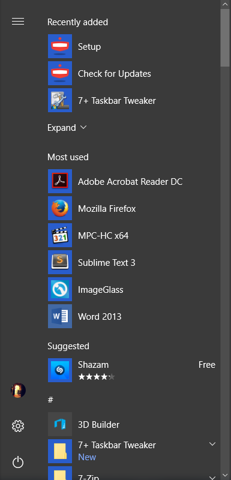
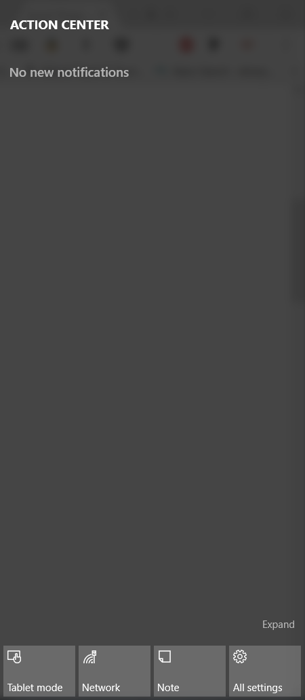
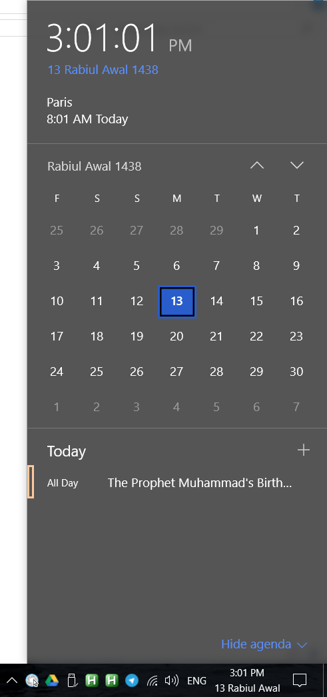
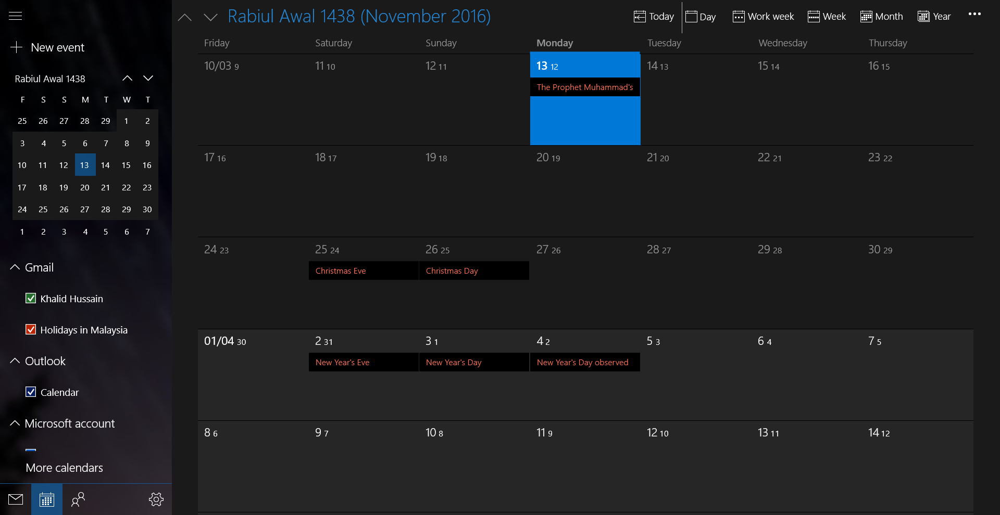
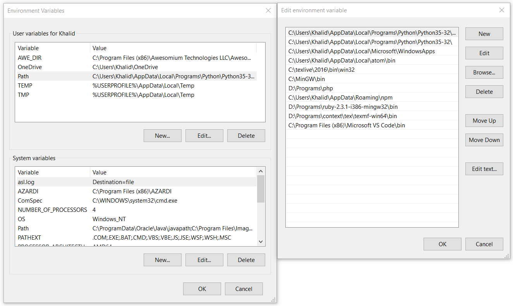

Microsoft had a hard time convincing their customers about the advantages of
the Windows 8 family. It seemed like it was poorly done, akin to slapping a
tablet UI over Windows 7.
I personally skipped the whole Windows 8 family and was initially reluctant to
switch to Windows 10 from the tried and tested Windows 7 (with Service Pack).
It was not until a friend of mine had Windows 10 installed and informed me of
his experience that I decided to try it out. Ironically, he too was avoiding
Windows 10 but on one (un)fortunate day, he woke up to his computer having
installed Windows 10 by itself. He was both surprised and disappointed, at
first.
I can’t believe this is still something debatable. Windows 8 took away the
start menu button causing confusion and frustration for both tablet and
computer users. They brought it back in 8.1 but the damage had been done by
then.
The start menu itself was obnoxious, taking over your whole screen, hiding all
open windows. The addition of all the “Live” tiles seemed to put a dent into
productivity, at least, mine. Something was always changing, updating,
requiring my attention.
Windows 10 changed all of that. It no longer takes up all of the screen.
“Live” tiles can be removed to provide a slick menu. I’ve never really
scrolled through the menu to find stuff as I always just start typing what I
want after pressing the Windows key. The Windows + S shortcut has made
this even faster.

My Start Menu
Notifications Centre
Windows 10 has a central notifications panel that can be accessed by clicking
on the message icon at the bottom-right of the screen or by pressing Windows +
A. All notifications stack up here and appropriate actions can be taken. It’s
useful for making sure you don’t miss important notifications.

Notifications Center
People App
The People app enables you to store information about your contacts. I haven’t
used the app by itself, but the feature I found the most useful is the
integration with Google Contacts. This is significant as all my contacts on my
Android phone are synced with my Google account. Thus, you get access to all
your contacts even if your phone is not on you at the moment.
Hijri Calendar
This is the feature I’ve come to appreciate the most. Windows 10 allows you to
set a Hijri calendar as your main calendar. This can be accessed from the
bottom-right of the taskbar. Although this was possible before, you can now
access both Hijri and Gregorian calendars through the Calendar app.

Taskbar Hijri calendar popup
Calendar App
The Calendar app in Windows 10 is quite brilliant. It enables syncing with
your Google account. This is great if you have an Android phone which is also
synced with your Google account. Adding events are a breeze, as is adding
reminders. You can also assign a location for each event and invite other
users to the created event.

Calendar app displaying both calendars
Command Prompt
The command prompt has been improved greatly over that in Windows 7. If any of
you have used one for a while, you’d realize that you couln’t easily resize or
even make fullscreen the command prompt in Windows 7. This has changed in
Windows 10 however it is still way behind the terminals of both Linux and OSX
operating systems.
Virtual Desktops
Not to be confused with Virtual Operating Systems. Virtual desktops have been around on Linux and OSX systems for quite some time now. Windows 10 just caught up in this department.
It is activated using Windows + TAB. The virtual desktops are shown in the bottom row. If activating for the first time, you will have no virtual desktops shown. To add a new virtual desktop, press on the “New Desktop” button.
You can move windows into the new desktop by dragging with the mouse cursor. You can swap into the other virtual desktops by clicking on their preview. Alternatively, you may use the Ctrl + Windows + <left, right> keyboard shortcut combination.
Editing PATHs
If you’ve done a certain level of development on Windows, you will have come across this task. Editing environment variables in Windows 7 can be a pain, especially if the value is already saturated. Windows 10 improved the environment variable menu. Everything can be viewed and edited with ease.

Edit Path Dialogs
End
I’ll populate this list as I find other good things Insha’Allah.